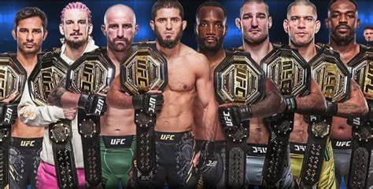

Los Mejores Peleadores de la Historia de la UFC Khabib Nurmagomedov Récord invicto de 29-0. Campeón de peso ligero. Conocido por su dominio en la lucha y el grappling. Anderson Silva Dominó la división de peso medio por más de una década. Considerado uno de los mejores strikers de la historia. Jon Jones Campeón en múltiples ocasiones en la división de peso semipesado. Habilidad completa en striking, wrestling y defensa. Georges St-Pierre (GSP) Doble campeón en peso wélter y mediano. Conocido por su lucha estratégica y su mentalidad disciplinada. Conor McGregor Primer peleador en ganar dos títulos simultáneos en diferentes categorías. Gran habilidad en striking y marketing personal. Daniel Cormier Campeón de peso semipesado y peso completo. Dominante en lucha olímpica y gran analista del deporte. Stipe Miocic Considerado uno de los mejores pesos completos de la historia. Defendió el título más veces en la división de los pesados. José Aldo Dominó la división de peso pluma por años. Su velocidad y patadas lo hicieron una leyenda en el octágono. Amanda Nunes Considerada la mejor peleadora femenina de todos los tiempos. Campeona simultánea en dos divisiones. Israel Adesanya Campeón de peso medio con gran precisión en striking. Famoso por su defensa de título y estilo técnico.
